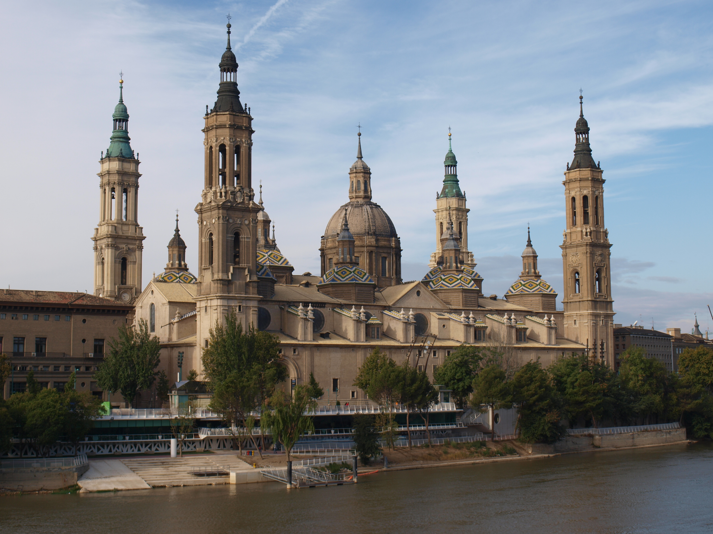
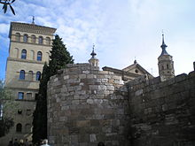
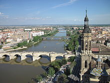
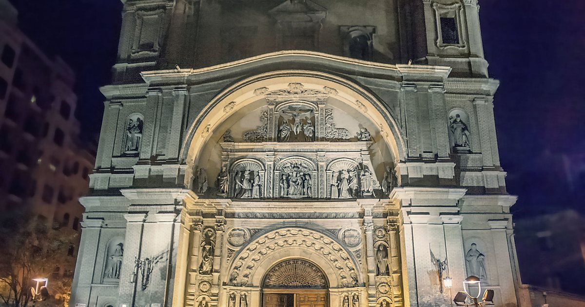
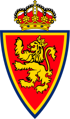

Zaragoza
Zaragoza je glavni grad Španjolske pokrajine Aragon u Španjolskoj. Leži uz rijeku Ebru i njezine pritoke. Stanovništvo Zaragoze 2010 bilo je 701.090 na površini od 1062 cetvornih kilometara.
Grad se nalazi na nadmorskoj visini od 199 metara iznad razine mora.
Grad je poznat po folklornoj, lokalnoj gastronomiji i znamenitostima kao što su Basilika del Pilar , katedrala La Seo i palača Aljafera. Zajedno s La Seom i Aljaferijom, nekoliko drugih građevina čine dio arhitekture Aragona koji je na UNESCO-vom popisu svjetske kulturne baštine. Fiesti del Pilar je jedan od najpoznatijih festivala u Španjolskoj.
Etimologija
Grad je nazvan prema Rimljanima Caesaraugusta iz kojih proizlazi sadašnje ime. Iberijski grad koji je prethodio rimski grad zvao Salduie.
Demografski podaci
Stanovništvo u tisucama kroz godine
Klima
Zaragoza ima blagu polu-sušnu klimu, jer se nalazi u širokom bazenu potpuno okruženom planinama koje blokiraju vlažni zrak iz Atlantskog i Mediteranskog. Prosječna godišnja kolicina oborina je slaba od 322 milimetara s obilnim sunčanim danima, a najslabija sezone su proljeće i jesen, s relativnom sušom ljeti i zima.
| Mjesec | Sijecanj | Veljaca | Ožujak | Travanj | Svibanj | Lipanj | Srpanj | Kolovoz | Rujan | Listopad | Studeni | Prosinac | Godišnji projek |
|---|---|---|---|---|---|---|---|---|---|---|---|---|---|
| Prosjek mjeseca | 6.6°C | 8.2°C | 11.6°C | 13.8°C | 18.0°C | 22.6°C | 25.3°C | 25.0°C | 21.2°C | 16.2°C | 10.6°C | 7.0°C | 15.5°C |
Znamenitosti
|
 Bazilika Nuestra Senora del Pilar |
 Rimske Zidine |
|
 Puente de Piedra most |
 Crkva Santa Engracia de Zaragoza |
Sport
Nogomet
Zaragozina glavna nogometna momčad je Real Zaragoza. Natječe se u Segunda Division. Klub je osnovan 18. ožujka 1932., igra na stadionu La Romareda. Klub je proveo većinu svoje povijesti u La Ligi. Jedan od najznacajnijih događaja u nedavnoj povijesti momčadi je pobjeda bivšeg Kup UEFA 1995.
Košarka
Glavna košarkaška momcad, Basket Zaragoza , igra u Liga ACB. Igraju svoje domaće igre u Pabellon Principe Felipe s kapacitetom od 10.744
Poznate osobe
Sebastian Pozas(1876-1946), vojni casnik
Abraham Abulafia 1240-1291), osnivac škole "Prophetic Kabbalah"
Izvori
https://en.wikipedia.org/wiki/Zaragozahttps://hr.wikipedia.org/wiki/Zaragoza